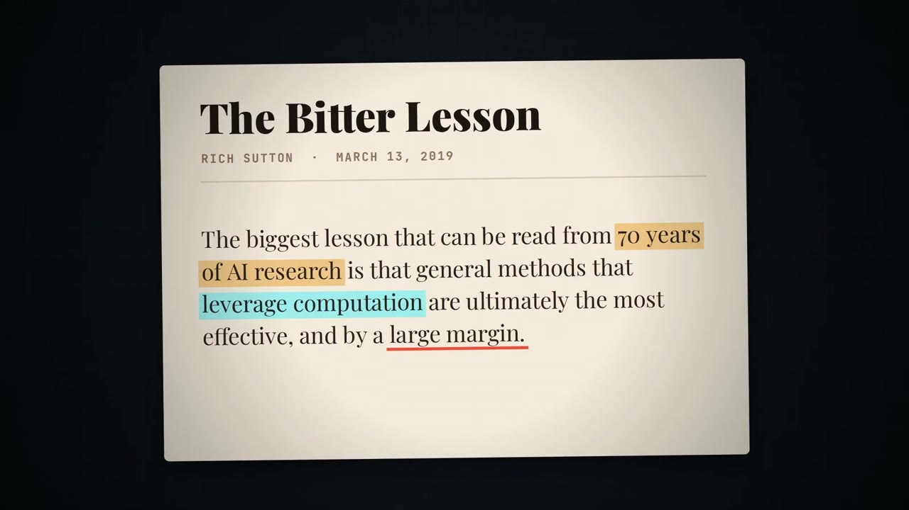
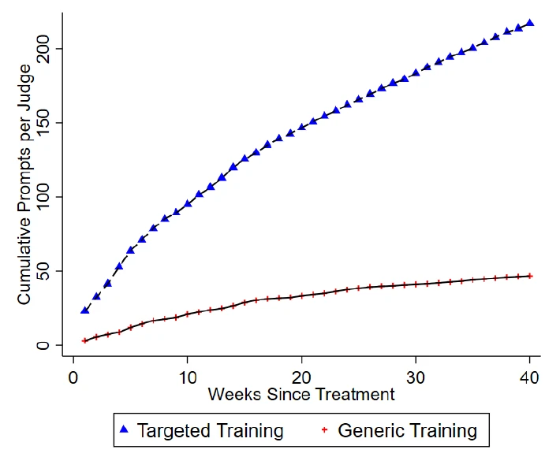

New Technologies cluster · Session 1 of 4
How language models are made, where they fail, and what they do to us
Łukasz Szoszkiewicz
Adam Mickiewicz University, Poznań
Global Campus of Human Rights
Monastery of San Nicolò, Lido di Venezia
The cluster
1
How models are made, where they fail, what they do to us
Day 1 · today
2
Research tools on UN and Strasbourg sources, then your first build in Garage Research
Day 1
3
What clean data lets you do
Day 2
4
Where clean data comes from
Day 2
Inside the Machine · Global Campus of Human Rights
2 / 31
I
Numbers, tokens, vectors, and one guess at a time
Part I · What the machine is made of
Every letter is a number, every number is 8 bits. Letters outside English take two bytes: in red.
Drag the slider to zoom in, then hover over a pixel.
Death in Venice (Visconti, 1971). About 30 such images every second.
A model turns each of them into a vector: text into tokens, images into patches.
Inside the Machine · Global Campus of Human Rights
4 / 31
Exercise · 20 minutes
Round 1 · a human rights corpus, 5 sentences
Round 2 · the internet arrives, 5 more
Round 3 · training is over, one word moves
Watch: who is torn between two groups? Who did not move at all in round 1?
Inside the Machine · Global Campus of Human Rights
5 / 31
Round 1 · a human rights corpus
Inside the Machine · Global Campus of Human Rights
6 / 31
Round 2 · the internet arrives
Inside the Machine · Global Campus of Human Rights
7 / 31
Round 3 · training is over
Everyone else stays put: the map is now fixed. I read a new sentence; “court” steps towards the words around it, then goes back to its place.
The players walked onto the court.
The applicant addressed the court.
Same word, same starting place, two meanings: the sentence decides, one sentence at a time.
Inside the Machine · Global Campus of Human Rights
8 / 31
What a word looks like to the model
court = [0.018, 0.062, −0.028, −0.053, −0.060, 0.001, 0.096, 0.022, 0.014, 0.044, … ] 384 numbers in all
Alone, court sits closer to tennis (0.53) than to violation (0.46). Without a sentence, the model cannot know which court you mean.
Compare any two: and
similarity –
In the room: 2 numbers. In this model: 384. In large language models: thousands for every token.
paraphrase-multilingual-MiniLM-L12-v2 · each word embedded on its own
9 / 31
The same corpus in a real model
↑ closer to the human rights sentences
closer to the everyday sentences →
torture
applicant
violation
treaty
asylum
court
convention
right
party
reservation
comics
tennis
restaurant
cake
left
● human rights · ● both · ● everyday
○ – – ● after round 1, then after round 2
The data decide what is close.
Ambiguous words land in between, and move when the data change.
With little data the map is crude: after round 1, right and party sat exactly on asylum.
paraphrase-multilingual-MiniLM-L12-v2. A word is the average of its sentences; its place is how close it is to each group of five.
Inside the Machine · Global Campus of Human Rights
10 / 31
What vectors are good for
The model from our exercise runs on a laptop, offline: our 10 sentences in under a second.
One space for 50+ languages: a question in French finds the English sentence.
The result is a text that already exists. Nothing is written, so nothing is invented.
| Query, in another language | Closest of our 10 English sentences | Similarity |
|---|---|---|
| La Cour a constaté une violation de la Convention. | The Court found a violation of the Convention. | 0.99 |
| Każde państwo-strona musi szanować prawo do azylu. | Every State party must respect the right to seek asylum. | 0.87 |
| La Convenzione vieta la tortura senza eccezioni. | The Convention prohibits torture without exception. | 0.98 |
| Reservé una mesa en el restaurante para las ocho. | I made a reservation at the restaurant for eight. | 0.90 |
| Wir haben für Samstag einen Tennisplatz gebucht. | We booked a tennis court for Saturday morning. | 0.93 |
paraphrase-multilingual-MiniLM-L12-v2 · 118 million parameters · run on a laptop, 11 November 2026
11 / 31
What round 3 was about
The
players
walked
onto
the
court
The
applicant
addressed
the
court
Line thickness: an illustration of the idea, not measured from a model.
Each token looks at the other tokens in the sentence and weighs how much each one matters to it.
It then mixes their meaning into its own vector: a tennis court, or a court of law.
This happens in dozens of layers. It is the T in GPT, the Transformer. GPT looks only back, at earlier words; models like BERT look both ways.
Vaswani et al., “Attention Is All You Need” (2017)
See it inside GPT-2: Transformer Explainer
Inside the Machine · Global Campus of Human Rights
12 / 31
Part I · What the machine is made of
GPT-2 (2019) runs in your browser. Type a sentence, move the temperature, then try your own language: count the tokens.
The model does not check facts. It picks what usually follows such a text. Hence the confident tone and the invented sources.
Inside the Machine · Global Campus of Human Rights
13 / 31
Part I · What the machine is made of
Billions of sentences. The task: guess the next token. GPT-2 stopped here.
You: Can the police read my private messages?
GPT-2: On Wednesday, I met a group of journalists,
It does not answer. It continues the text.
People write thousands of pairs: a task and a good answer. On anything: conversations, legal letters, a language.
Task: Can the police read my messages?
Model answer: Only on a legal basis, usually with a court’s consent.
It learns the form. How we did it →
Two answers; a person picks the better one; the model is rewarded for it.
A: Yes, always.
B: It depends: a legal basis and oversight are needed. Chosen
It learns the style: careful, helpful, polite.
A conversation is only a format. The model still writes the next token, now as the assistant’s turn.
Inside the Machine · Global Campus of Human Rights
14 / 31
II
Brilliant at one task, surprisingly weak at the next
Part II · Uneven ability
Artificial Analysis runs many public tests on each new model and combines them into one Intelligence Index, with price and speed beside it.
Read a score like evidence: which tasks? which settings? who ran it? Could the questions have leaked into the training data?
PrinzBench: a US lawyer’s own legal research test, 33 questions never published.
Secret, so the questions cannot leak into training data. The price: nobody outside can check the score.
June 2026: the best model scored 91 of 99. The test lasted about half a year.
Build your own: ten questions from your work, with answers you know. Run every new model on them.
Inside the Machine · Global Campus of Human Rights
16 / 31
Part II · Uneven ability
Excellent at one task, surprisingly weak at a neighbouring one that looks just as hard.
1
2
3
1
2
3
■ what AI does well – – – tasks a person finds equally hard
INSIDE
OUTSIDE
1 Formal check of an appeal (deadline, fee, mandate)
96–100% correct · 101 cases
1 Writing the judgment in the same chamber’s exam
37/100, pass mark 50
2 Spotting an invented citation, with a database
93.5–100% caught
2 Spotting a real judgment that says something else
46–83% caught
3 Summarising a document it was given
77.2% of required elements
3 Recalling case law from memory, unchecked
some case numbers do not exist
Dell’Acqua et al. 2026 · Karp et al. 2026 · Liu, Stammbach and Henderson 2026 · VLAIR 2025 · NSA, I OSK 590/26
17 / 31
Part II · Uneven ability
2,047
court decisions in 41 countries on AI-invented content · Charlotin, to Sept. 2026
17–33%
wrong answers from Lexis+ AI and Westlaw · Magesh et al. 2025
My test · from memory
Article 54 of the ICCPR does not exist. 24 models said so in:
38%
of answers to a leading question
83%
to a neutral one
My test · with sources (RAG)
Three ECtHR questions, cases checked in HUDOC. What is RAG? →
| Cited case | no sources | with sources |
|---|---|---|
| correct | 31 | 36 |
| real, wrong detail | 7 | 1 |
| invented | 1 | 0 |
Inside the Machine · Global Campus of Human Rights
18 / 31
Part II · Is RAG only for now?
Rich Sutton (2019): over 70 years of AI research, general methods that grow with computing power beat human knowledge built in by hand.
My guess: hand-built RAG may not be needed in 3 to 5 years. The question of sources stays.

The Bitter Lesson · Ethan Mollick’s channel, YouTube, 2 Oct 2026 · 3:08
III
When the work runs through a model, what do we keep?
Part III · 1 · The evidence: Pakistan’s courts
GPT-4 with one instruction for judges: “cite only the cases you were given”.
It picks its own search words; a keyword search runs over 128,292 judgments and 943 statutes and attaches the 10 best passages. Every answer has footnotes.
| Group | Judges | What they got |
|---|---|---|
| A | 1,197 | JudgeGPT and six lectures on using it |
| B | 180 | JudgeGPT and a general course |
| Control | 182 | The general course only |
The question: how much comes from access to the tool, and how much from learning to use it?
Mehmood, Goessmann and Ash, “Courts of Tomorrow”, CEPR DP 21783 (2026), pp. 10–13
21 / 31
Part III · 1 · The evidence: the results

Prompts per judge over 40 weeks: trained (▲) and access only (+). Fig. 5B
Trained judges used it more than four times as often.
+6.3% more cases decided in a typical district: 1,848 a year. Slightly fewer appeals; no drop in the quality of judgments.
After training: fewer open legal questions, more editing and summaries, where the output is easy to check.
The judge works faster, but still checks and decides.
Not reported: how often JudgeGPT invented things.
The same pattern among patent lawyers: appendix →
Mehmood, Goessmann and Ash (2026), Fig. 5B · Gent, IEEE Spectrum (2026)
22 / 31
Part III · 2 · Why it goes wrong
You give the model a task. The result stays yours: you check it and can explain it.
The model summarises a judgment; you read the key paragraphs and fix the summary.
The model’s answer becomes the starting point of your next step, untested.
You build your argument on that summary without opening the judgment.
The model’s answer becomes your answer. You no longer feel the need to check.
The summary goes into your submission. Asked what the Court held, you cannot say.
The test: if you cannot explain the answer, even with the model’s help, you have surrendered it.
Addy Osmani (2026) · “cognitive surrender”: Shaw and Nave, Wharton
23 / 31
Part III · 3 · What to keep
Jensen Huang, NVIDIA, on No Priors, 8 January 2026, from 9:03 · 57 s
Machines take over tasks. The purpose of the job stays, and the job is rebuilt around it.
His example: reading scans is a radiologist’s task; diagnosing disease is the purpose.
Remember the distinction. When a task goes to a model, ask what it was for, and keep that.
Inside the Machine · Global Campus of Human Rights
24 / 31
Part III · 4 · What to do
1
Write down your own answer before you ask.
Once you have read a fluent answer, it is hard to imagine another one.
2
Use models to build tools for analysis, not as the analysis.
The model writes the code once; the code gives the same answer every time, and you can check it.
3
Cross-check: another model, another session, one model judging another.
Even agents checking agents beat one agent alone: 93.0% against 88.9% in a fact-checking test.
4
Ask open questions, not for the verdict.
“Give me the pros and cons.” “Give me three different options.” The decision stays with you.
5
If you would not sign it, it does not go out.
You can hand off the work, not the responsibility.
1 and 5 after Addy Osmani (2026) · 3: Huang et al., DeepFact, ACL 2026
25 / 31
Before
Decide
Prepare: search, read, write
Evaluate
With AI
Decide
Prepare
Evaluate
The art: use models where they are strong, and keep their harms small.
A warning from Bell and Legg (2026): writing is also thinking. The decision often forms while you write.
After the break
Research tools on UN and Strasbourg sources, built with AI. Then your first build in Garage Research.
A charged laptop, and a country or a topic you work on.
Inside the Machine · Global Campus of Human Rights
27 / 31
Inside the Machine · Global Campus of Human Rights
28 / 31
Appendix · How RAG works
Retrieval-augmented generation. Before the model answers, a search finds passages in a trusted collection, and the model must answer from those passages only.
You ask in your own words.
“Does facial recognition against a peaceful protester violate Article 8?”
A search engine picks the best passages from a fixed collection.
Here: 886 paragraphs of 23 ECtHR judgments.
Each passage keeps its source.
[1] Glukhin v. Russia, § 89
[2] Gaughran v. UK, § 68
[3] Libert v. France, § 42
The model gets an instruction, the passages and your question.
“Answer only from passages [1]–[3]. Cite each claim.”
Every claim points to a passage.
In Glukhin, facial recognition used to identify the applicant met no “pressing social need” [1].
Without RAG the model answers from memory, guessing the next token. With RAG it answers from sources you can open, and you still check the footnotes.
29 / 31
Appendix · Patent lawyers
133 patent lawyers at 11 US firms, three months with or without an AI assistant, then a test without it.
Better drafts (+0.34 to +0.38 SD). Juniors gained the most.
Seniors who had used AI beat those who had not (+0.45 SD). Juniors: no gain on average.
Practise on your own first: that is how you learn what to check.
Autor et al., “Does AI Assistance Enhance or Erode Expertise?”, NBER Working Paper 35720 (2026)
30 / 31
Appendix · Stage 2, from the inside
PLLuM is a Polish large language model built with public money by a consortium that includes NASK. In 2025 a team of lawyers wrote a dataset to tune it for law and public administration.
Administrative decisions (building permits, benefits, fines, residence permits), summons to remedy formal defects, transfers to the competent authority
Appeals against decisions, freedom of information requests, payment demands, consumer complaints, contracts, powers of attorney
One example = an instruction + the document a good lawyer would write. Two of the kind:
Access to information
“Ask the city office how many assemblies it banned in 2024, and on what grounds.”
→ a request under the Act on Access to Public Information
An effective remedy
“Appeal against a refused residence permit; the office ignored the applicant’s family.”
→ an appeal citing the Code and Article 8 ECHR
31 / 31